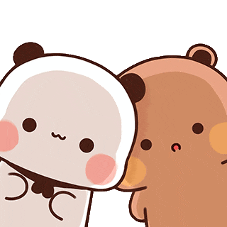
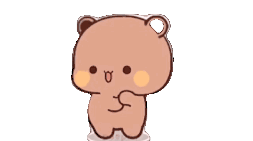

Selamat Hari My Girl 💗
haiiiii kakakk cantikkkkkk
Selamattttt Myyyyy Girlfrienddd Dayyyy, Yunitaaakuuu sayanggggggg 💖💖 Akuuuu bersyukuuuur bangetttt punyaa kamuuuu, yangg selaluuu lucuuu, gemesinnn, dan manissss bangettttt 🍬😚
Kamuuuu ituuu ceweeeekk tercintaaaa, yangg selaluuu adaaa buattt akuuu dannn akuuu makin jatuhhh cintaaaaa setiapppp hariiiiii 🥰💞

Hari iniiii kamuuu harusss senanggg,
harusss bahagiaaaa, harusss dimanjaaaa
karenaaa kamuuuu spesialll bangetttttt~ ✨💓
Akuuuu sayanggggg kamuuu lebihhh
dariiii bobaaa, cilokkk, mieee instannnn,
dannnn semuuaa dramaa koreaaaaa digabungggg
Pokoknyaaaa... Loveeee youuuuu alwaysss, Yunitaaa sayanggggggg selamanyaaaaaa~ 💖💖💖
Kamuuu itu cewe paling spesial di hidup akuuuu~ yang selalu bikin hari-hariku lebih berwarna, lebih rame, lebih lucu, dan tentunyaaa lebih penuh cinta 💘
Kalo hati aku ada tombol favorittt, udah pasti kamu yang aku tekan terussss tiap hariii ğŸ¤ğŸ’•
Kamu itu kayak WiFi—tanpa kamu, hidup akuuu lemot banget, ga nyambung, dan bosenin bangeeettt 😝📶

Makasih yaaa udah jadi rumah ternyaman buat akuuuu~ tempat curhat, tempat manja, tempat tawa, bahkan tempat ngambek juga kadang 😅 Tapi tetep, aku sayanggg kamuuu lebih dari kata-kata bisa jelaskannnn 💖

Kamuuu itu kombinasi dari gemesin, ngeselin, tapi tetep aku pilih terusss~ kayak mie instan yang bikin candu tapi juga bikin kenyang hati 😂🍜
Hari ini hari kamu, My Girl, dan aku janji, aku bakal terus ada buat kamuuu... selamanyaaa~ 💑🌙

iii loveee youuu babyyy
LOVEEE YOUUU FOREVERRR YUNITAAA KUUU SAYANGGGGG 😘😘 HAPPYYY GIRLLFRIENDDD DAYY YAAAA CANTIKKUUUUUUU 💕